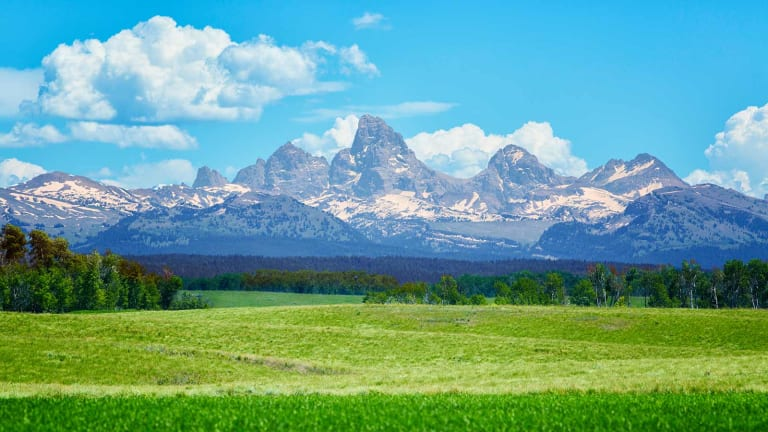
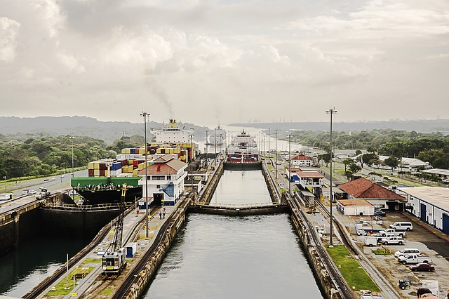
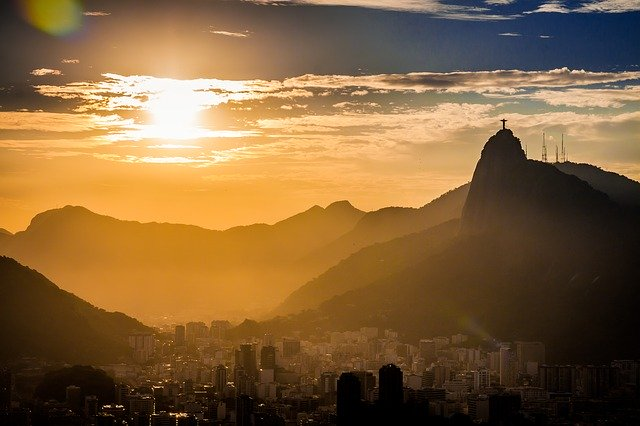
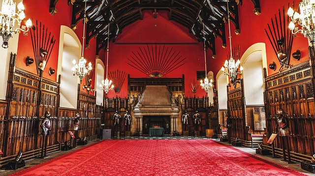

The Beginning

I was born and raised in Idaho. Ironically, I don’t like potatoes. My grandparents were dairy farmers though so I happily trade in potatoes for ice cream.
Idaho is the fastest growing state in the United States. If you ever visit, here are some fun, beautiful and random activities to check out near Southeast Idaho. They all played a role in a wonderful childhood.
The Middle



I completed my bachelor and master degrees at universities in Idaho and Utah.
My first “real job” out of college was in Salt Lake City, Utah. It was fun to finally make money and begin to travel the world.
I lucked out marrying a pilot who has further enabled my love for travel. Below is a list of places I've traveled.
Hopefully it's just the beginning of a much longer list.
- Argentina
- Brazil
- Guatemala
- Belize
- Panama
- Mexico
- Scotland
- England